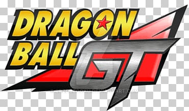

Dragon Ball GT (ドラゴンボール GTジーティー)
es un anime creado por el estudio de animación japonés Toei Animation con ayuda inicial de Akira Toriyama. Ubicado 10 años después de la batalla contra Majin Boo y 5 años tras el final de Dragon Ball Z, es el tercer anime de la franquicia Dragon Ball. A diferencia de los dos primeros animes, no se basa en el manga original Dragon Ball de Toriyama, siendo un spin-off de la serie de anime.
Fue estrenado el 7 de febrero de 1996, y terminó el 19 de noviembre de 1997. Contó con 64 episodios y un episodio especial para televisión titulado Gokū Gaiden! Yūki no akashi wa Sì Xīngqiú.4 El 15 de junio de 2005 salió en Japón una caja recopilatoria especial que contenía toda la serie en 12 DVD, y entre el 6 de febrero y el 4 de junio de 2008 salieron a la venta 11 DVD individuales.

- Son Gokū: protagonista de la serie, fue convertido en niño por un deseo accidental de Pilaf utilizando las Dragon Balls de Estrellas Negras. Por ello deberá embarcarse en un viaje por el universo con la intención de recolectar las Dragon Balls de estrellas negras en menos de un año o de lo contrario la Tierra se desintegrara sin remedio.
- Trunks: hijo de Vegeta y Bulma, uno de los elegidos para acompañar a Gokū en el viaje.
- Pan: la hija de Gohan y Videl y nieta de Gokū y Chi-Chi logra esconderse en la nave acompañándolos finalmente en el viaje.
- Vegeta: el Principe Saiyajin y rival de Gokū, se queda en la Tierra mientras él viaja, es atacado y poseído por Baby con la intención de destruir a Gokū y todos los Saiyajin.
- Giru: es un robot que Gokū y compañía encuentran en la nave espacial casi sin energía durante la búsqueda de las Dragon Balls de estrellas negras. Al comerse el Radar del Dragón para alimentarse obtiene la habilidad de detectar las esferas. Él acompaña a los héroes ya que al poseer ahora el radar del dragón, es la única forma de encontrar las Dragon Balls de Estrellas Negras.
